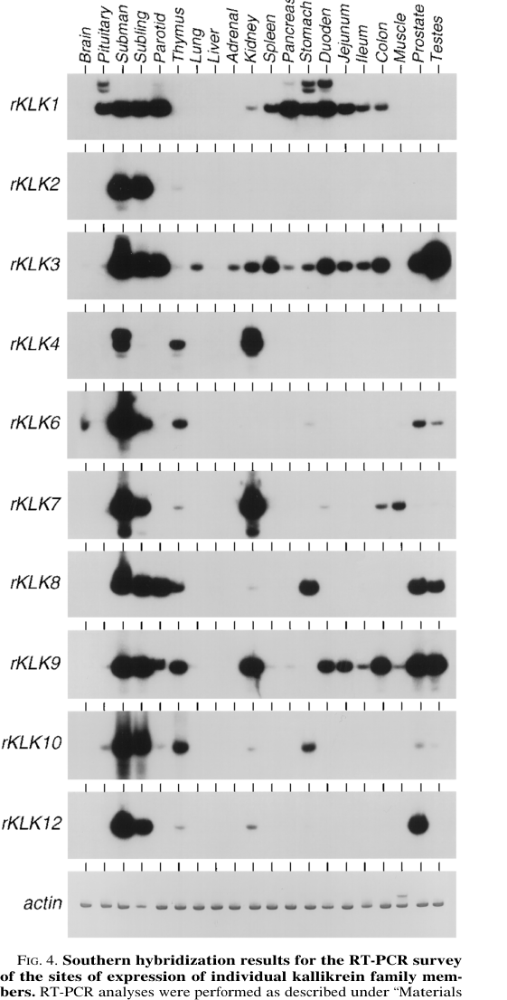

Klk9 encodes rat submandibular glandular kallikrein-9, a secreted serine endopeptidase with kininogen-cleaving/vasoconstrictor activity. The review accepts serine-type endopeptidase activity and experimentally supported vasoconstriction as the main curated functions and treats secretion/zymogen/process annotations as non-core context.
| GO Term | Evidence | Action | Reason |
|---|---|---|---|
|
GO:0004252
serine-type endopeptidase activity
|
IBA
GO_REF:0000033 |
ACCEPT |
Summary: Klk9 is a submandibular glandular kallikrein-9; the serine-type endopeptidase activity annotation is supported by the fetched UniProt/GOA evidence (IBA, GO_REF:0000033) and represents a core or direct activity/process.
Reason: This term captures a directly supported part of Klk9 core biochemistry or the closest GO process for that activity.
Supporting Evidence:
UniProtKB:P07647
GO; GO:0004252; F:serine-type endopeptidase activity; IBA:GO_Central.
file:rat/Klk9/Klk9-deep-research-falcon.md
explicitly equates **rKLK9 with SEV** and places it within the **rat tissue (glandular) kallikrein multigene family** of secreted serine proteases (EC **3.4.21.35**)
|
|
GO:0030141
secretory granule
|
IBA
GO_REF:0000033 |
KEEP AS NON CORE |
Summary: The secretory granule annotation is plausible for Klk9 but should be kept as non-core context rather than used to define the gene product function.
Reason: The localization is useful context but is not the core molecular function of Klk9.
Supporting Evidence:
UniProtKB:P07647
GO; GO:0030141; C:secretory granule; IBA:GO_Central.
file:rat/Klk9/Klk9-deep-research-falcon.md
Northern hybridization had primarily detected rKLK9 in **SMG and prostate**, whereas RT-PCR revealed additional lower-level sites (including **kidney**).
|
|
GO:0003073
regulation of systemic arterial blood pressure
|
IBA
GO_REF:0000033 |
KEEP AS NON CORE |
Summary: The regulation of systemic arterial blood pressure annotation is plausible for Klk9 but should be kept as non-core context rather than used to define the gene product function.
Reason: The annotation is compatible with Klk9 biology but is broader or more contextual than the core molecular function.
Supporting Evidence:
UniProtKB:P07647
GO; GO:0003073; P:regulation of systemic arterial blood pressure; IBA:GO_Central.
|
|
GO:0031638
zymogen activation
|
IBA
GO_REF:0000033 |
KEEP AS NON CORE |
Summary: The zymogen activation annotation is plausible for Klk9 but should be kept as non-core context rather than used to define the gene product function.
Reason: The annotation is compatible with Klk9 biology but is broader or more contextual than the core molecular function.
Supporting Evidence:
UniProtKB:P07647
GO; GO:0031638; P:zymogen activation; IBA:GO_Central.
|
|
GO:0004252
serine-type endopeptidase activity
|
IEA
GO_REF:0000120 |
ACCEPT |
Summary: Klk9 is a submandibular glandular kallikrein-9; the serine-type endopeptidase activity annotation is supported by the fetched UniProt/GOA evidence (IEA, GO_REF:0000120, from EC:3.4.21.35 / InterPro) and represents a core or direct activity/process. Falcon independently places rKLK9/SEV in the rat tissue kallikrein family of serine proteases (EC 3.4.21.35).
Reason: This term captures a directly supported part of Klk9 core biochemistry or the closest GO process for that activity.
Supporting Evidence:
UniProtKB:P07647
GO; GO:0004252; F:serine-type endopeptidase activity; IBA:GO_Central.
file:rat/Klk9/Klk9-deep-research-falcon.md
any claim beyond “serine protease in the tissue kallikrein family (EC 3.4.21.35)” and “vasoconstrictor activity attributed to SEV” would be speculative based on this evidence set
|
|
GO:0006508
proteolysis
|
IEA
GO_REF:0000002 |
KEEP AS NON CORE |
Summary: The proteolysis annotation is plausible for Klk9 but should be kept as non-core context rather than used to define the gene product function.
Reason: The annotation is compatible with Klk9 biology but is broader or more contextual than the core molecular function.
Supporting Evidence:
UniProtKB:P07647
FUNCTION: Glandular kallikreins cleave Met-Lys and Arg-Ser bonds in kininogen to release Lys-bradykinin. This enzyme has a vasoconstrictor activity.
|
|
GO:0045907
positive regulation of vasoconstriction
|
IDA
PMID:1900513 A novel serine protease with vasoconstrictor activity coded ... |
ACCEPT |
Summary: Klk9 is a submandibular glandular kallikrein-9; the positive regulation of vasoconstriction annotation is supported by the fetched UniProt/GOA evidence (IDA, PMID:1900513) and represents a core or direct activity/process. Falcon independently identifies rKLK9 as SEV (submandibular enzymatic vasoconstrictor) and emphasizes its direct/potent vasoconstrictor activity as a distinguishing functional feature within the rat kallikrein family.
Reason: This term captures a directly supported part of Klk9 core biochemistry or the closest GO process for that activity.
Supporting Evidence:
UniProtKB:P07647
GO; GO:0045907; P:positive regulation of vasoconstriction; IDA:RGD.
file:rat/Klk9/Klk9-deep-research-falcon.md
Rat rKLK9 encodes SEV, described in a primary expression paper as having **direct vasoconstrictor activity**
file:rat/Klk9/Klk9-deep-research-falcon.md
it is repeatedly described as having **potent/direct vasoconstrictor activity**, contrasting with the vasodilatory/vasodepressor framing often emphasized for kinin-generating kallikreins
|
The research report should be a detailed narrative explaining the function, biological processes, and localization of the gene product. Citations should be given for all claims.
You should prioritize authoritative reviews and primary scientific literature when conducting research. You can supplement
this with annotations you find in gene/protein databases, but these can be outdated or inaccurate.
We are specifically interested in the primary function of the gene - for enzymes, what reaction is catalyzed, and what is the substrate specificity? For transporters, what is the substrate? For structural proteins or adapters, what is the broader structural role? For signaling molecules, what is the role in the pathway.
We are interested in where in or outside the cell the gene product carries out its function.
We are also interested in the signaling or biochemical pathways in which the gene functions. We are less interested in broad pleiotropic effects, except where these elucidate the precise role.
Include evidence where possible. We are interested in both experimental evidence as well as inference from structure, evolution, or bioinformatic analysis. Precise studies should be prioritized over high-throughput, where available.
The requested target is rat (Rattus norvegicus) Klk9, UniProt P07647, annotated as submandibular glandular kallikrein-9 and historically referred to as rKLK9 and SEV (submandibular enzymatic vasoconstrictor). The available rat literature retrieved here explicitly equates rKLK9 with SEV and places it within the rat tissue (glandular) kallikrein multigene family of secreted serine proteases (EC 3.4.21.35), matching the UniProt description and the peptidase S1 family context. (eldahr1993molecularaspectsof pages 2-3, macdonald1996disparatetissuespecificexpression pages 6-7)
A common ambiguity is confusion with human KLK9 (a member of the human chromosome 19 KLK cluster). Human KLK9 literature is not directly transferable to rat Klk9 functional claims; it is used here only for limited conceptual context where explicitly labeled. (memari2008rolesofhuman pages 127-131)
Tissue (glandular) kallikreins are serine proteases (EC 3.4.21.35) and are core enzymatic components of the kallikrein–kinin system (KKS), which comprises kallikreins (plasma and tissue), kininogens, kininases, and bradykinin receptors. In canonical KKS biology, tissue kallikreins cleave kininogens to liberate kinins that signal through bradykinin receptors, supporting paracrine/autocrine regulation of vascular tone and renal function. (eldahr1993molecularaspectsof pages 1-2, eldahr1993molecularaspectsof pages 5-5)
At the gene-family level in rat, tissue kallikreins are described as acidic glycoproteins (~24–45 kDa) encoded by similarly structured genes (commonly 5 exons/4 introns) with substantial sequence homology but functionally meaningful differences in substrate specificity across family members. (eldahr1993molecularaspectsof pages 2-3, eldahr1993molecularaspectsof pages 1-2)
Rat Klk9 (rKLK9/SEV) is one member of a large rat kallikrein multigene family (reviewed as ~20 genes), and it is notable in the retrieved literature because it is repeatedly described as having potent/direct vasoconstrictor activity, contrasting with the vasodilatory/vasodepressor framing often emphasized for kinin-generating kallikreins in kidney physiology reviews. (eldahr1993molecularaspectsof pages 2-3, macdonald1996disparatetissuespecificexpression pages 6-7, clements1998currentperspectiveson pages 9-10)
Rat Klk9/SEV is classified within tissue kallikreins as a serine endopeptidase (EC 3.4.21.35). (eldahr1993molecularaspectsof pages 2-3, eldahr1993molecularaspectsof pages 1-2)
Within the accessible full text retrieved in this run, direct biochemical characterization of purified rat rKLK9/SEV (e.g., cleavage-site preference, defined physiological substrates, Km/kcat, inhibitor constants, or processing into light/heavy chains) was not available. Multiple sources point to older primary biochemistry papers for kallikrein-family substrate specificity and for the kallikrein gene S3 product (linked to SEV), but those primary papers were not obtainable here. (eldahr1993molecularaspectsof pages 5-6, clements1998currentperspectiveson pages 9-10)
Accordingly, any claim beyond “serine protease in the tissue kallikrein family (EC 3.4.21.35)” and “vasoconstrictor activity attributed to SEV” would be speculative based on this evidence set, and is not asserted as rat Klk9-specific fact in this report. (macdonald1996disparatetissuespecificexpression pages 6-7, clements1998currentperspectiveson pages 9-10)
A key rat primary study surveying expression of 10 active kallikrein genes across 20 major organs using gene-specific RT-PCR/Southern hybridization found that:
* rKLK9 (SEV) mRNA was detected in 16 organs, with four organs showing only “barely detectable” levels. (macdonald1996disparatetissuespecificexpression pages 6-7)
* Submandibular gland (SMG) is the only organ expressing all 10 active kallikrein genes in that survey, underscoring SMG as a kallikrein-rich secretory tissue. (macdonald1996disparatetissuespecificexpression pages 1-2)
Figure-based summary evidence from that study defines expression scoring criteria:
* “+” indicates significant expression at ≥0.1 mRNA/cell (assay sensitivity benchmark corresponding to ~1 mRNA/10 cells); “±” indicates detectable but below that threshold; “−” indicates no detectable signal. (macdonald1996disparatetissuespecificexpression media 54f4156b, macdonald1996disparatetissuespecificexpression pages 4-5)
The same study notes that Northern hybridization had primarily detected rKLK9 in SMG and prostate, whereas RT-PCR revealed additional lower-level sites (including kidney). (macdonald1996disparatetissuespecificexpression pages 6-7)
A renal-development review reports that SEV (rKLK9) transcripts were localized to nonglomerular kidney fractions (in addition to SMG and prostate) and provides a relative abundance estimate: SEV mRNA ~10-fold less abundant than PS mRNA (PS = “true tissue kallikrein” in that review’s terminology). (eldahr1993molecularaspectsof pages 2-3)
Across the kallikrein family expression survey, the dynamic range of kallikrein-gene mRNA abundance among organs was reported as >10^5-fold, spanning from slightly less than 1 mRNA molecule/10 cells up to >10,000 mRNA molecules/cell (family-level values; not Klk9-specific absolute quantities). (macdonald1996disparatetissuespecificexpression pages 1-2)
Rat rKLK9 encodes SEV, described in a primary expression paper as having direct vasoconstrictor activity (attributed to earlier biochemical/physiology work). (macdonald1996disparatetissuespecificexpression pages 6-7)
A kallikrein gene-family review cites work describing “a novel serine protease with vasoconstrictor activity coded by the kallikrein gene S3,” supporting the linkage between the S3 kallikrein and a vasoconstrictor phenotype consistent with SEV nomenclature. (clements1998currentperspectiveson pages 9-10)
The retrieved kidney-focused review frames kallikreins primarily as kinin-generating enzymes in the KKS, with kinins acting via bradykinin receptors and influencing renal hemodynamics and natriuresis; however, it separately highlights SEV as a potent vasoconstrictor described from SMG/prostate and detectable in kidney RNA fractions, implying functional diversification within the rat kallikrein family. (eldahr1993molecularaspectsof pages 2-3, eldahr1993molecularaspectsof pages 1-2)
Direct 2023–2024 rat Klk9 (P07647)-focused mechanistic literature was not recovered with accessible full text in this run. The most relevant 2024 development retrieved was broader kallikrein-related protease biology pointing to expanding roles of KLKs as extracellular regulators of inflammatory cytokines:
In practice, rat kallikrein genes (including rKLK9/SEV) are commonly used as:
* Readouts of tissue-specific gene regulation (especially in SMG and prostate) due to their complex, hormone- and tissue-dependent expression patterns. The organ survey demonstrates that kallikrein genes can vary from detection in 3 to 18 organs (depending on the family member), with rKLK9 detected broadly (16 organs). (macdonald1996disparatetissuespecificexpression pages 6-7, macdonald1996disparatetissuespecificexpression pages 4-5)
Although not rat Klk9-specific, modern KLK research is increasingly framed in terms of:
* Protease–substrate networks in inflammation, barrier function, and cytokine activation (e.g., KLK-mediated IL-36 processing). (petrova2024comparativeanalysesof pages 15-16, petrova2024comparativeanalysesof pages 11-12)
For rat Klk9/SEV, an applied interpretation supported by the retrieved evidence is that it represents a secreted protease with vascular activity whose expression across multiple organs makes it a candidate node for studying kallikrein-family diversification and vasoactive protease biology. (macdonald1996disparatetissuespecificexpression pages 6-7)
Gene-family diversification and functional specialization: The JBC expression survey emphasizes that despite close linkage and high sequence conservation, kallikrein family members show “very different and complex patterns” of tissue expression, consistent with functional specialization rather than redundancy. This supports interpreting rKLK9/SEV as a distinct functional kallikrein rather than a generic kallikrein-like transcript. (macdonald1996disparatetissuespecificexpression pages 1-2)
Kidney developmental/physiology framing: The pediatric nephrology review positions kallikreins within renal developmental physiology and KKS signaling, but highlights SEV as a potent vasoconstrictor and notes SEV mRNA in kidney fractions at lower abundance than canonical kallikrein transcripts, suggesting a specialized, potentially context-dependent role rather than being the dominant renal kallikrein. (eldahr1993molecularaspectsof pages 2-3)
The main missing elements for a high-confidence functional annotation of rat Klk9 (P07647) in this run are direct enzymology and maturation/processing data, including:
* experimentally defined substrate specificity (P1 preference, cleavage motif),
* physiological substrate(s) responsible for “direct vasoconstrictor activity,”
* kinetic parameters (Km/kcat), inhibitor sensitivities,
* biochemical evidence for precursor processing (signal peptide/propeptide activation; any light/heavy chain processing) beyond the UniProt description.
The retrieved reviews and expression studies explicitly point toward older primary biochemical papers for those specifics (e.g., the kallikrein gene S3/SEV characterization and submandibular kallikrein substrate specificity studies), but they were not accessible in full text here. (eldahr1993molecularaspectsof pages 5-6, clements1998currentperspectiveson pages 9-10)
| Claim/Topic | Key details | Evidence type (review/primary) | Source (authors, year, venue) | URL/DOI | Citation ID(s) |
|---|---|---|---|---|---|
| Kallikrein family definition and enzyme class | Rat Klk9/P07647 belongs to the tissue (glandular) kallikrein multigene family of serine proteases; family members are acidic glycoproteins (~24–45 kDa), typically encoded by similarly structured genes with 5 exons/4 introns and substantial sequence homology, but distinct substrate specificities. Tissue kallikreins are classified as EC 3.4.21.35. | Review | El-Dahr & Dipp, 1993, Pediatric Nephrology | https://doi.org/10.1007/BF00852573 | (eldahr1993molecularaspectsof pages 2-3, eldahr1993molecularaspectsof pages 1-2) |
| SEV identity and origin | rKLK9 corresponds to SEV (submandibular enzymatic vasoconstrictor), originally described in rat submandibular gland (SMG) and prostate; the cited literature characterizes it as a kallikrein-family serine protease with potent/direct vasoconstrictor activity. | Review summarizing primary studies; primary expression survey | El-Dahr & Dipp, 1993, Pediatric Nephrology; MacDonald et al., 1996, J. Biol. Chem. | https://doi.org/10.1007/BF00852573; https://doi.org/10.1074/jbc.271.23.13684 | (eldahr1993molecularaspectsof pages 2-3, macdonald1996disparatetissuespecificexpression pages 6-7) |
| SEV/Klk9 mRNA in kidney and abundance relative to PS | SEV transcripts were reported in nonglomerular kidney fractions as well as SMG/prostate; SEV mRNA was reported to be ~10-fold less abundant than PS (true tissue kallikrein) mRNA. The review also notes circulating tissue kallikrein sources in rat include SMG and arteries. | Review | El-Dahr & Dipp, 1993, Pediatric Nephrology | https://doi.org/10.1007/BF00852573 | (eldahr1993molecularaspectsof pages 2-3) |
| Broad tissue expression of rKLK9 | In a gene-specific RT-PCR/Southern survey across 20 major rat organs, rKLK9 mRNA was detected in 16 organs; four organs showed only barely detectable levels. Northern hybridization had previously identified expression mainly in submandibular gland and prostate, while RT-PCR revealed additional lower-level expression in parotid, kidney, duodenum, colon, and testes. | Primary | MacDonald et al., 1996, J. Biol. Chem. | https://doi.org/10.1074/jbc.271.23.13684 | (macdonald1996disparatetissuespecificexpression pages 6-7) |
| Figure 5 expression threshold and high vs low detection | Figure 5 summarized rKLK9 expression using a threshold where “+” denotes significant expression at >=0.1 mRNA/cell, “±” denotes detectable but lower expression, and “−” denotes undetectable signal. For rKLK9, significant expression was highlighted in submandibular gland and prostate, with lower-level detection across multiple additional organs, supporting broad but uneven tissue distribution. | Primary, figure-based | MacDonald et al., 1996, J. Biol. Chem. | https://doi.org/10.1074/jbc.271.23.13684 | (macdonald1996disparatetissuespecificexpression media 5a702b2f, macdonald1996disparatetissuespecificexpression media 54f4156b) |
| Functional pathway context | Family-level context indicates tissue kallikreins participate in the kallikrein–kinin system (KKS), generating kinins from kininogen and acting in vasoactive signaling; however, SEV/rKLK9 is notable because literature summarized here emphasizes vasoconstrictor activity rather than the canonical vasodilatory/kinin-liberating role usually associated with tissue kallikrein. | Review | El-Dahr & Dipp, 1993, Pediatric Nephrology | https://doi.org/10.1007/BF00852573 | (eldahr1993molecularaspectsof pages 2-3, eldahr1993molecularaspectsof pages 1-2, eldahr1993molecularaspectsof pages 5-5, eldahr1993molecularaspectsof pages 6-6) |
| Evidence gap: direct enzymology for rat Klk9 | In this session, no full-text primary paper was retrieved that directly reported purified rat rKLK9/SEV kinetic constants, cleavage-site preferences, physiological substrates, or detailed maturation/chain-processing data. Available sources repeatedly point to older primary papers (e.g., Yamaguchi et al. 1991; Berg et al. 1992; Moreau et al. 1992) for substrate specificity and biochemical characterization, but those data were not accessible here. | Evidence gap based on retrieved sources | El-Dahr & Dipp, 1993, Pediatric Nephrology and session retrieval record | https://doi.org/10.1007/BF00852573 | (eldahr1993molecularaspectsof pages 5-6, eldahr1993molecularaspectsof pages 6-6) |
Table: This table compiles the rat Klk9/rKLK9/SEV evidence available in this session, including gene-family context, tissue distribution, vasoconstrictor function, and key evidence gaps. It is useful as a concise source map for functional annotation of UniProt P07647.
References
(eldahr1993molecularaspectsof pages 2-3): Samir S. El-Dahr and Susana Dipp. Molecular aspects of kallikrein and kininogen in the maturing kidney. Pediatric Nephrology, 7:646-651, Oct 1993. URL: https://doi.org/10.1007/bf00852573, doi:10.1007/bf00852573. This article has 5 citations and is from a domain leading peer-reviewed journal.
(macdonald1996disparatetissuespecificexpression pages 6-7): Raymond J. MacDonald, E. Michelle Southard-Smith, and Evert Kroon. Disparate tissue-specific expression of members of the tissue kallikrein multigene family of the rat*. The Journal of Biological Chemistry, 271:13684-13690, Jun 1996. URL: https://doi.org/10.1074/jbc.271.23.13684, doi:10.1074/jbc.271.23.13684. This article has 50 citations.
(memari2008rolesofhuman pages 127-131): N Memari. Roles of human kallikrein-related peptidases 9 and 12 in cancer. Unknown journal, 2008.
(eldahr1993molecularaspectsof pages 1-2): Samir S. El-Dahr and Susana Dipp. Molecular aspects of kallikrein and kininogen in the maturing kidney. Pediatric Nephrology, 7:646-651, Oct 1993. URL: https://doi.org/10.1007/bf00852573, doi:10.1007/bf00852573. This article has 5 citations and is from a domain leading peer-reviewed journal.
(eldahr1993molecularaspectsof pages 5-5): Samir S. El-Dahr and Susana Dipp. Molecular aspects of kallikrein and kininogen in the maturing kidney. Pediatric Nephrology, 7:646-651, Oct 1993. URL: https://doi.org/10.1007/bf00852573, doi:10.1007/bf00852573. This article has 5 citations and is from a domain leading peer-reviewed journal.
(clements1998currentperspectiveson pages 9-10): JA Clements. Current perspectives on the molecular biology of the renal tissue kallikrein gene and the related tissue kallikrein gene family. Unknown journal, 1998.
(eldahr1993molecularaspectsof pages 5-6): Samir S. El-Dahr and Susana Dipp. Molecular aspects of kallikrein and kininogen in the maturing kidney. Pediatric Nephrology, 7:646-651, Oct 1993. URL: https://doi.org/10.1007/bf00852573, doi:10.1007/bf00852573. This article has 5 citations and is from a domain leading peer-reviewed journal.
(macdonald1996disparatetissuespecificexpression pages 1-2): Raymond J. MacDonald, E. Michelle Southard-Smith, and Evert Kroon. Disparate tissue-specific expression of members of the tissue kallikrein multigene family of the rat*. The Journal of Biological Chemistry, 271:13684-13690, Jun 1996. URL: https://doi.org/10.1074/jbc.271.23.13684, doi:10.1074/jbc.271.23.13684. This article has 50 citations.
(macdonald1996disparatetissuespecificexpression media 54f4156b): Raymond J. MacDonald, E. Michelle Southard-Smith, and Evert Kroon. Disparate tissue-specific expression of members of the tissue kallikrein multigene family of the rat*. The Journal of Biological Chemistry, 271:13684-13690, Jun 1996. URL: https://doi.org/10.1074/jbc.271.23.13684, doi:10.1074/jbc.271.23.13684. This article has 50 citations.
(macdonald1996disparatetissuespecificexpression pages 4-5): Raymond J. MacDonald, E. Michelle Southard-Smith, and Evert Kroon. Disparate tissue-specific expression of members of the tissue kallikrein multigene family of the rat*. The Journal of Biological Chemistry, 271:13684-13690, Jun 1996. URL: https://doi.org/10.1074/jbc.271.23.13684, doi:10.1074/jbc.271.23.13684. This article has 50 citations.
(petrova2024comparativeanalysesof pages 15-16): Evgeniya Petrova, Jesús María López-Gay, Matthias Fahrner, Florent Leturcq, Jean-Pierre de Villartay, Claire Barbieux, Patrick Gonschorek, Lam C. Tsoi, Johann E. Gudjonsson, Oliver Schilling, and Alain Hovnanian. Comparative analyses of netherton syndrome patients and spink5 conditional knock-out mice uncover disease-relevant pathways. Communications Biology, Feb 2024. URL: https://doi.org/10.1038/s42003-024-05780-y, doi:10.1038/s42003-024-05780-y. This article has 17 citations and is from a peer-reviewed journal.
(petrova2024comparativeanalysesof pages 11-12): Evgeniya Petrova, Jesús María López-Gay, Matthias Fahrner, Florent Leturcq, Jean-Pierre de Villartay, Claire Barbieux, Patrick Gonschorek, Lam C. Tsoi, Johann E. Gudjonsson, Oliver Schilling, and Alain Hovnanian. Comparative analyses of netherton syndrome patients and spink5 conditional knock-out mice uncover disease-relevant pathways. Communications Biology, Feb 2024. URL: https://doi.org/10.1038/s42003-024-05780-y, doi:10.1038/s42003-024-05780-y. This article has 17 citations and is from a peer-reviewed journal.
(macdonald1996disparatetissuespecificexpression media 5a702b2f): Raymond J. MacDonald, E. Michelle Southard-Smith, and Evert Kroon. Disparate tissue-specific expression of members of the tissue kallikrein multigene family of the rat*. The Journal of Biological Chemistry, 271:13684-13690, Jun 1996. URL: https://doi.org/10.1074/jbc.271.23.13684, doi:10.1074/jbc.271.23.13684. This article has 50 citations.
(eldahr1993molecularaspectsof pages 6-6): Samir S. El-Dahr and Susana Dipp. Molecular aspects of kallikrein and kininogen in the maturing kidney. Pediatric Nephrology, 7:646-651, Oct 1993. URL: https://doi.org/10.1007/bf00852573, doi:10.1007/bf00852573. This article has 5 citations and is from a domain leading peer-reviewed journal.

id: P07647
gene_symbol: Klk9
product_type: PROTEIN
status: COMPLETE
taxon:
id: NCBITaxon:10116
label: Rattus norvegicus
description: Klk9 encodes rat submandibular glandular kallikrein-9, a secreted serine endopeptidase with kininogen-cleaving/vasoconstrictor
activity. The review accepts serine-type endopeptidase activity and experimentally supported vasoconstriction as the main
curated functions and treats secretion/zymogen/process annotations as non-core context.
existing_annotations:
- term:
id: GO:0004252
label: serine-type endopeptidase activity
evidence_type: IBA
original_reference_id: GO_REF:0000033
review:
summary: Klk9 is a submandibular glandular kallikrein-9; the serine-type endopeptidase activity annotation is supported
by the fetched UniProt/GOA evidence (IBA, GO_REF:0000033) and represents a core or direct activity/process.
action: ACCEPT
reason: This term captures a directly supported part of Klk9 core biochemistry or the closest GO process for that activity.
supported_by:
- reference_id: UniProtKB:P07647
supporting_text: GO; GO:0004252; F:serine-type endopeptidase activity; IBA:GO_Central.
- reference_id: file:rat/Klk9/Klk9-deep-research-falcon.md
supporting_text: |-
explicitly equates **rKLK9 with SEV** and places it within the **rat tissue (glandular) kallikrein multigene family** of secreted serine proteases (EC **3.4.21.35**)
- term:
id: GO:0030141
label: secretory granule
evidence_type: IBA
original_reference_id: GO_REF:0000033
review:
summary: The secretory granule annotation is plausible for Klk9 but should be kept as non-core context rather than used
to define the gene product function.
action: KEEP_AS_NON_CORE
reason: The localization is useful context but is not the core molecular function of Klk9.
supported_by:
- reference_id: UniProtKB:P07647
supporting_text: GO; GO:0030141; C:secretory granule; IBA:GO_Central.
- reference_id: file:rat/Klk9/Klk9-deep-research-falcon.md
supporting_text: |-
Northern hybridization had primarily detected rKLK9 in **SMG and prostate**, whereas RT-PCR revealed additional lower-level sites (including **kidney**).
- term:
id: GO:0003073
label: regulation of systemic arterial blood pressure
evidence_type: IBA
original_reference_id: GO_REF:0000033
review:
summary: The regulation of systemic arterial blood pressure annotation is plausible for Klk9 but should be kept as non-core
context rather than used to define the gene product function.
action: KEEP_AS_NON_CORE
reason: The annotation is compatible with Klk9 biology but is broader or more contextual than the core molecular function.
supported_by:
- reference_id: UniProtKB:P07647
supporting_text: GO; GO:0003073; P:regulation of systemic arterial blood pressure; IBA:GO_Central.
- term:
id: GO:0031638
label: zymogen activation
evidence_type: IBA
original_reference_id: GO_REF:0000033
review:
summary: The zymogen activation annotation is plausible for Klk9 but should be kept as non-core context rather than used
to define the gene product function.
action: KEEP_AS_NON_CORE
reason: The annotation is compatible with Klk9 biology but is broader or more contextual than the core molecular function.
supported_by:
- reference_id: UniProtKB:P07647
supporting_text: GO; GO:0031638; P:zymogen activation; IBA:GO_Central.
- term:
id: GO:0004252
label: serine-type endopeptidase activity
evidence_type: IEA
original_reference_id: GO_REF:0000120
review:
summary: Klk9 is a submandibular glandular kallikrein-9; the serine-type endopeptidase activity annotation is supported
by the fetched UniProt/GOA evidence (IEA, GO_REF:0000120, from EC:3.4.21.35 / InterPro) and represents a core or direct
activity/process. Falcon independently places rKLK9/SEV in the rat tissue kallikrein family of serine proteases (EC
3.4.21.35).
action: ACCEPT
reason: This term captures a directly supported part of Klk9 core biochemistry or the closest GO process for that activity.
supported_by:
- reference_id: UniProtKB:P07647
supporting_text: GO; GO:0004252; F:serine-type endopeptidase activity; IBA:GO_Central.
- reference_id: file:rat/Klk9/Klk9-deep-research-falcon.md
supporting_text: |-
any claim beyond “serine protease in the tissue kallikrein family (EC 3.4.21.35)” and “vasoconstrictor activity attributed to SEV” would be speculative based on this evidence set
- term:
id: GO:0006508
label: proteolysis
evidence_type: IEA
original_reference_id: GO_REF:0000002
review:
summary: The proteolysis annotation is plausible for Klk9 but should be kept as non-core context rather than used to define
the gene product function.
action: KEEP_AS_NON_CORE
reason: The annotation is compatible with Klk9 biology but is broader or more contextual than the core molecular function.
supported_by:
- reference_id: UniProtKB:P07647
supporting_text: 'FUNCTION: Glandular kallikreins cleave Met-Lys and Arg-Ser bonds in kininogen to release Lys-bradykinin.
This enzyme has a vasoconstrictor activity.'
- term:
id: GO:0045907
label: positive regulation of vasoconstriction
evidence_type: IDA
original_reference_id: PMID:1900513
review:
summary: Klk9 is a submandibular glandular kallikrein-9; the positive regulation of vasoconstriction annotation is supported
by the fetched UniProt/GOA evidence (IDA, PMID:1900513) and represents a core or direct activity/process. Falcon
independently identifies rKLK9 as SEV (submandibular enzymatic vasoconstrictor) and emphasizes its direct/potent
vasoconstrictor activity as a distinguishing functional feature within the rat kallikrein family.
action: ACCEPT
reason: This term captures a directly supported part of Klk9 core biochemistry or the closest GO process for that activity.
supported_by:
- reference_id: UniProtKB:P07647
supporting_text: GO; GO:0045907; P:positive regulation of vasoconstriction; IDA:RGD.
- reference_id: file:rat/Klk9/Klk9-deep-research-falcon.md
supporting_text: |-
Rat rKLK9 encodes SEV, described in a primary expression paper as having **direct vasoconstrictor activity**
- reference_id: file:rat/Klk9/Klk9-deep-research-falcon.md
supporting_text: |-
it is repeatedly described as having **potent/direct vasoconstrictor activity**, contrasting with the vasodilatory/vasodepressor framing often emphasized for kinin-generating kallikreins
references:
- id: GO_REF:0000002
title: GO reference used by source annotation pipeline
findings: []
- id: GO_REF:0000033
title: GO reference used by source annotation pipeline
findings: []
- id: GO_REF:0000120
title: GO reference used by source annotation pipeline
findings: []
- id: PMID:1900513
title: A novel serine protease with vasoconstrictor activity coded by the kallikrein gene S3
findings: []
- id: file:rat/Klk9/Klk9-deep-research-falcon.md
title: 'Falcon (Edison Scientific) deep research report: rat Klk9 (P07647) — submandibular
glandular kallikrein-9 (rKLK9/SEV/KLK-S3)'
findings:
- statement: |-
Falcon confirms gene identity: rat Klk9 (P07647) is rKLK9, equated with SEV
(submandibular enzymatic vasoconstrictor), within the rat tissue kallikrein
multigene family of secreted serine proteases (EC 3.4.21.35), and explicitly
distinguishes it from human KLK9.
supporting_text: |-
explicitly equates **rKLK9 with SEV** and places it within the **rat tissue (glandular) kallikrein multigene family** of secreted serine proteases (EC **3.4.21.35**)
reference_section_type: OTHER
- statement: |-
rKLK9/SEV is repeatedly described as having potent/direct vasoconstrictor
activity, contrasting with the canonical vasodilatory/kinin-generating role of
most tissue kallikreins.
supporting_text: |-
it is repeatedly described as having **potent/direct vasoconstrictor activity**, contrasting with the vasodilatory/vasodepressor framing often emphasized for kinin-generating kallikreins
reference_section_type: OTHER
- statement: |-
A primary expression paper describes SEV (rKLK9) as having direct
vasoconstrictor activity, corroborating the GO:0045907 IDA annotation.
supporting_text: |-
Rat rKLK9 encodes SEV, described in a primary expression paper as having **direct vasoconstrictor activity**
reference_section_type: OTHER
- statement: |-
Falcon flags a major evidence gap: direct biochemical characterization of
purified rat rKLK9/SEV (cleavage-site preference, physiological substrates,
kinetics, inhibitor constants, light/heavy chain processing) was not available
in this run. This supports conservative, family/EC-level annotations rather
than speculative substrate- or maturation-specific claims.
supporting_text: |-
direct biochemical characterization of purified rat rKLK9/SEV (e.g., cleavage-site preference, defined physiological substrates, Km/kcat, inhibitor constants, or processing into light/heavy chains)** was **not available**
reference_section_type: OTHER
- statement: |-
Falcon advises that claims beyond serine protease in the tissue kallikrein
family (EC 3.4.21.35) and vasoconstrictor activity attributed to SEV would be
speculative on this evidence set.
supporting_text: |-
any claim beyond “serine protease in the tissue kallikrein family (EC 3.4.21.35)” and “vasoconstrictor activity attributed to SEV” would be speculative based on this evidence set
reference_section_type: OTHER
- statement: |-
Expression survey (MacDonald et al. 1996): rKLK9/SEV mRNA detected in 16 of
20 rat organs, with Northern hybridization showing predominant expression in
submandibular gland and prostate (secretory tissues), supporting a secreted
product and the secretory-granule/extracellular localization context.
supporting_text: |-
Northern hybridization had primarily detected rKLK9 in **SMG and prostate**, whereas RT-PCR revealed additional lower-level sites (including **kidney**).
reference_section_type: OTHER
core_functions:
- description: 'Klk9 encodes rat submandibular glandular kallikrein-9. FUNCTION: Glandular kallikreins cleave Met-Lys and
Arg-Ser bonds in kininogen to release Lys-bradykinin. This enzyme has a vasoconstrictor activity.'
supported_by:
- reference_id: UniProtKB:P07647
supporting_text: 'FUNCTION: Glandular kallikreins cleave Met-Lys and Arg-Ser bonds in kininogen to release Lys-bradykinin.
This enzyme has a vasoconstrictor activity.'
- reference_id: file:rat/Klk9/Klk9-deep-research-falcon.md
supporting_text: |-
explicitly equates **rKLK9 with SEV** and places it within the **rat tissue (glandular) kallikrein multigene family** of secreted serine proteases (EC **3.4.21.35**)
molecular_function:
id: GO:0004252
label: serine-type endopeptidase activity
directly_involved_in:
- id: GO:0045907
label: positive regulation of vasoconstriction
{kind=link}